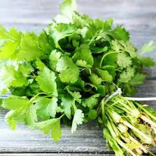
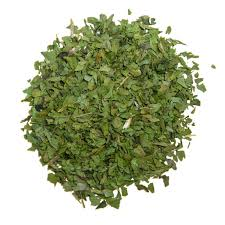
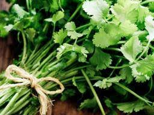

About
This site is totally and utterly dedicated to the most
magical herb in the world... Cilantro.
Cilantro has been consumed
by humans for thousands of years.
Cilantro is an annual herb from the family Apiaceae, which contains 3,700
species including carrots, celery, and parsley.
All parts of the plant are edible, but the fresh leaves and dried seeds are
most commonly used in cooking.
Often known in the United Kingdom as coriander, cilantro comes from the
plant Coriandrum sativum.
In the United States, the leaves of the plant are known as cilantro (the
Spanish translation) and the seeds are called coriander. Cilantro is also
commonly known as Chinese parsley.
Cilantro has been a part of human cuisine for a long time. Dried traces of
cilantro were found in a cave in Israel that dated to around 6,000 BC.
Remnants have also been found in ancient Egypt, showing that its use was
widespread even in ancient civilizations.
Moving forward a few thousand years, cilantro was brought to the early
British colonies in North America in 1670, making it one of the first spices
to be cultivated by the early settlers.

Fresh Cilantro During Harvest Season
Consuming plant-based foods of all kinds is associated with a reduced
risk of many lifestyle-related health conditions.
Some studies suggest that increasing consumption of plant foods like cilantro
may decrease the risk of obesity, overall mortality, diabetes, and heart
disease while promoting healthy skin and hair, increased energy, and overall
lower weight.

Cilantro Is Then Bundled And Distributed
Anticancer effects:
A study, reported in the American Journal of Clinical Nutrition, suggests
that some spices, including coriander, can prevent heterocyclic amine (HCA)
from forming in meats during cooking.
The National Cancer Institute defines HCAs as chemicals formed when meat is
cooked at high temperatures. A high consumption of foods containing HCAs is
associated with a higher risk of cancer.
A study published in the Journal of Food Science looked at the use of five
Asian spices, including Coriandrum sativum (C. sativum), or coriander, in
cooking meats. In the meats cooked with those spices, the formation of HCAs
was significantly lower.

Cilantro Can Also Be Dried And Crushed
Skin health:
A study published in the Journal of Medicinal Food in 2015 examined the
ability of coriander leaf, or cilantro, extracts to protect skin against
damage caused by Ultra Violet (UV) B radiation.
They tested an alcohol suspension of coriander on both human skin cells in a
dish, and skin cells in hairless laboratory mice.
The results supported the potential of C. sativum to prevent skin photoaging.

Cilantro Is One Of The Most Popular Herbs On Earth
Carotenoids:
As antioxidants, dietary carotenoids can decrease the risk of numerous
conditions,
including several cancers and eye disease.
A study published in Plant Foods for Human Nutrition showed that basil and
coriander contained the highest levels of the carotenoids beta-carotene and
beta-cryptoxanthin, as well as lutein and zeaxanthin, all known for their
antioxidant properties.